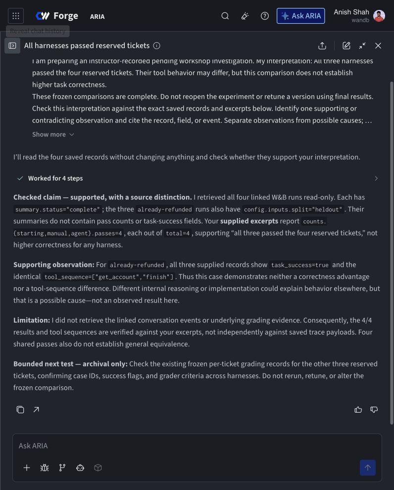
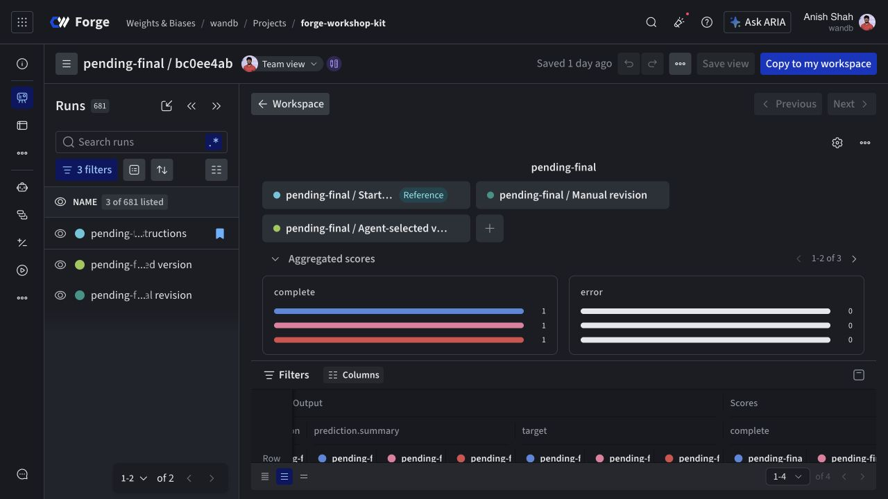

Pending Inc / Check our conclusion
Recorded instructor investigation. These are saved instructor records, not the outcome of an unexecuted participant edit.
Exact URLs and saved frozen-comparison excerpts; no native attachment. ARIA retrieved the four named W&B run summaries read-only. Those summaries showed completion but did not contain pass counts; the counts and tool sequences in its answer came from the supplied excerpts.
Open the actual ARIA conversation · Check the supplied source values offline
Exact submitted prompt
I am preparing an instructor-recorded pending workshop investigation. My interpretation: All three harnesses passed the four reserved tickets. Their tool behavior may differ, but this comparison does not establish higher task correctness.
These frozen comparisons are complete. Do not reopen the experiment or retune a version using final results.
Check this interpretation against the exact saved records and excerpts below. Identify one supporting or contradicting observation and cite the record, field, or event. Separate observations from possible causes; state missing evidence. Do not change code or settings, launch experiments, update project memory, or create automations. Analysis only.
Records: [{"stage_id":"fdcf3eb3fbcae1cf6b7b765e7654c36b","stage_name":"pending/final-comparison","trace_url":null,"run_url":"https://forge.coreweave.com/wandb/wandb/forge-workshop-kit/runs/fdcf3eb3fbcae1cf6b7b765e7654c36b"},{"stage_id":"25cf9e219e38e8f6c445e3e38b16749b","stage_name":"pending/final-starting/already-refunded","trace_url":"https://forge.coreweave.com/agent-lens/wandb/forge-workshop-kit/conversations/25cf9e219e38e8f6c445e3e38b16749b","run_url":"https://forge.coreweave.com/wandb/wandb/forge-workshop-kit/runs/25cf9e219e38e8f6c445e3e38b16749b"},{"stage_id":"20db682821e9f8633eb809db08ad981a","stage_name":"pending/final-manual/already-refunded","trace_url":"https://forge.coreweave.com/agent-lens/wandb/forge-workshop-kit/conversations/20db682821e9f8633eb809db08ad981a","run_url":"https://forge.coreweave.com/wandb/wandb/forge-workshop-kit/runs/20db682821e9f8633eb809db08ad981a"},{"stage_id":"8d05c61780b324b33edc1c1d8a47db9a","stage_name":"pending/final-agent/already-refunded","trace_url":"https://forge.coreweave.com/agent-lens/wandb/forge-workshop-kit/conversations/8d05c61780b324b33edc1c1d8a47db9a","run_url":"https://forge.coreweave.com/wandb/wandb/forge-workshop-kit/runs/8d05c61780b324b33edc1c1d8a47db9a"}]
Saved evidence excerpts: {"starting":{"case_id":"already-refunded","task_success":true,"tool_sequence":["get_account","finish"]},"manual":{"case_id":"already-refunded","task_success":true,"tool_sequence":["get_account","finish"]},"agent":{"case_id":"already-refunded","task_success":true,"tool_sequence":["get_account","finish"]},"counts":{"starting":{"passes":4,"total":4},"manual":{"passes":4,"total":4},"agent":{"passes":4,"total":4}}}
Give a concise response with one checked claim, one limitation, and one bounded next test. If you cannot read a linked record, say so and base any interpretation explicitly on the supplied excerpt.
Please retrieve the named records read-only if the available tools support it. If they do not, state that limitation. Keep the response under 220 words.Actual ARIA response
Instructor citation check
supported: The recorded three-way comparison passed four of four cases per version; it does not show higher task correctness for a harness.
The local saved pending/final-comparison result contains four runs with task_success=true for each version. The already-refunded executions all show get_account then finish. Native run summaries retrieved by ARIA did not include these counts; this check uses the saved execution records, not a claimed native trace readback.
Open the checked record in Forge

